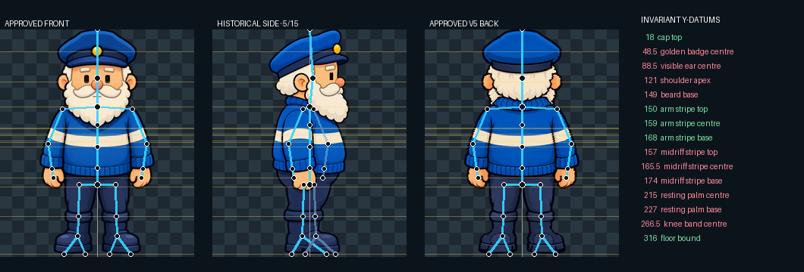
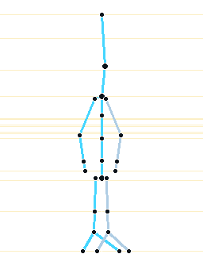
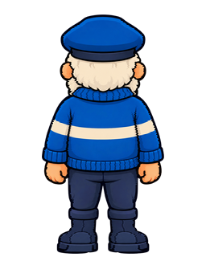
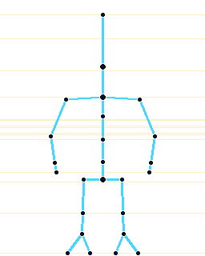
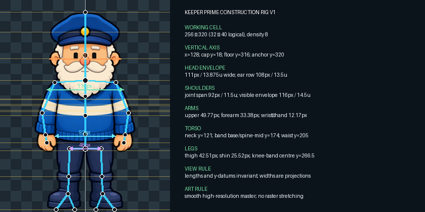

Rig rule: bone lengths, vertical anatomy, floor anchor and identity volumes remain fixed. Side widths are projections, not smaller anatomy. Final beard, hair and clothing are redrawn around the rig at smooth master resolution; finished raster art is never mechanically stretched.
Orthographic measurement board
Overlay inspection
Approved front


Historical side / target rig


Approved V5 back


Exact measurements

Posable fixed-length lab
Move the sliders: joints rotate, but the registered upper-arm, forearm, thigh and shin lengths do not change. This is a construction underlay—not finished character deformation.
Side validation target
| Datum | target y | historical side y | Δ |
|---|---|---|---|
| cap top | 18 | 18 | +0 |
| golden badge centre | 48.5 | 46 | -2.5 |
| visible ear centre | 88.5 | 89.5 | +1 |
| shoulder apex | 121 | 108 | -13 |
| beard base | 149 | 142 | -7 |
| arm stripe top | 150 | 150 | +0 |
| arm stripe centre | 159 | 159 | +0 |
| arm stripe base | 168 | 168 | +0 |
| midriff stripe top | 157 | 155 | -2 |
| midriff stripe centre | 165.5 | 162.5 | -3 |
| midriff stripe base | 174 | 170 | -4 |
| resting palm centre | 215 | 218 | +3 |
| resting palm base | 227 | 231 | +4 |
| knee band centre | 266.5 | 264.5 | -2 |
| floor bound | 316 | 316 | +0 |
The rig target is 15/15 exact. Current art is 5/15 and remains blocked. No generated side art is included in Rig V1.
Approval boundary
Approving this page accepts the construction measurements and posable underlay only. It does not promote any raw/runtime asset. The next separate review pack will use this rig to author one super-smooth 90° side endpoint and must prove 15/15 y-datum agreement before any turn frames begin.